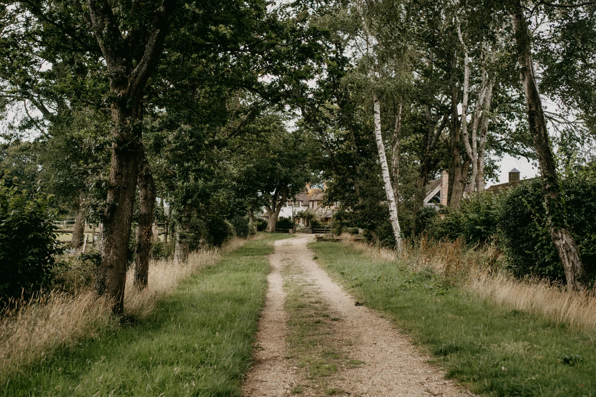
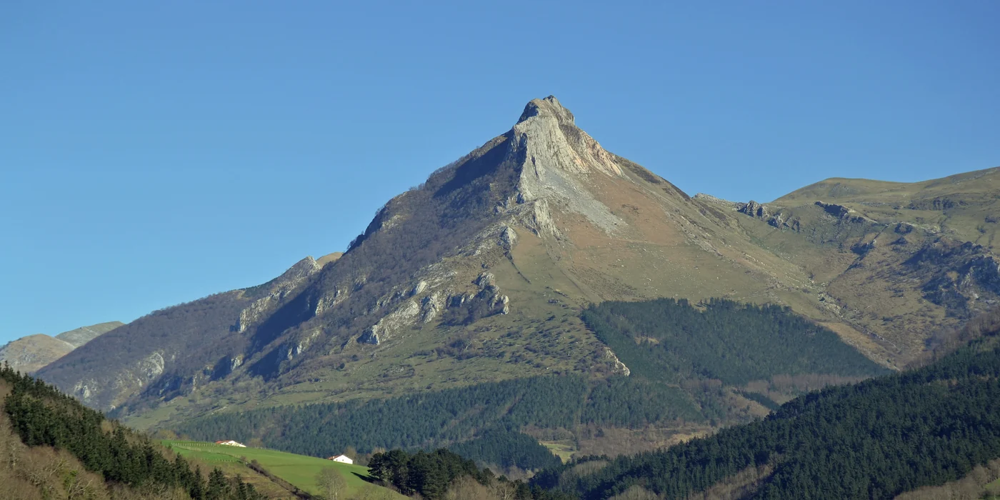
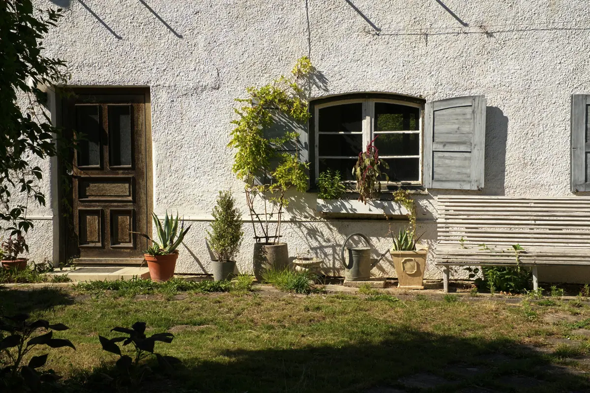
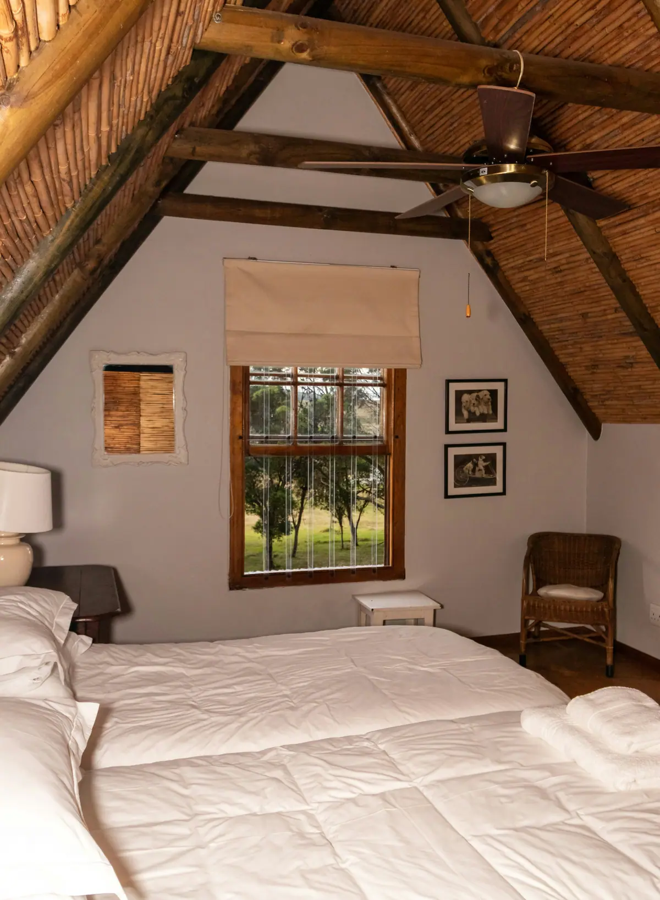
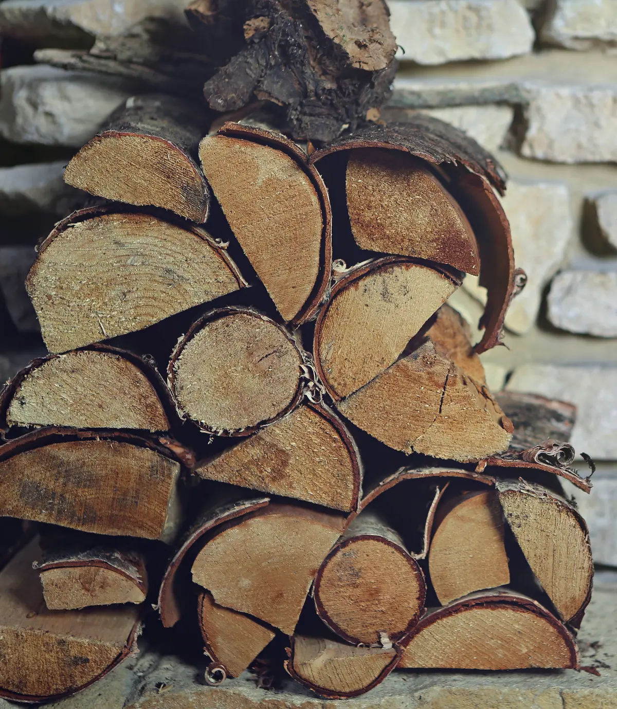
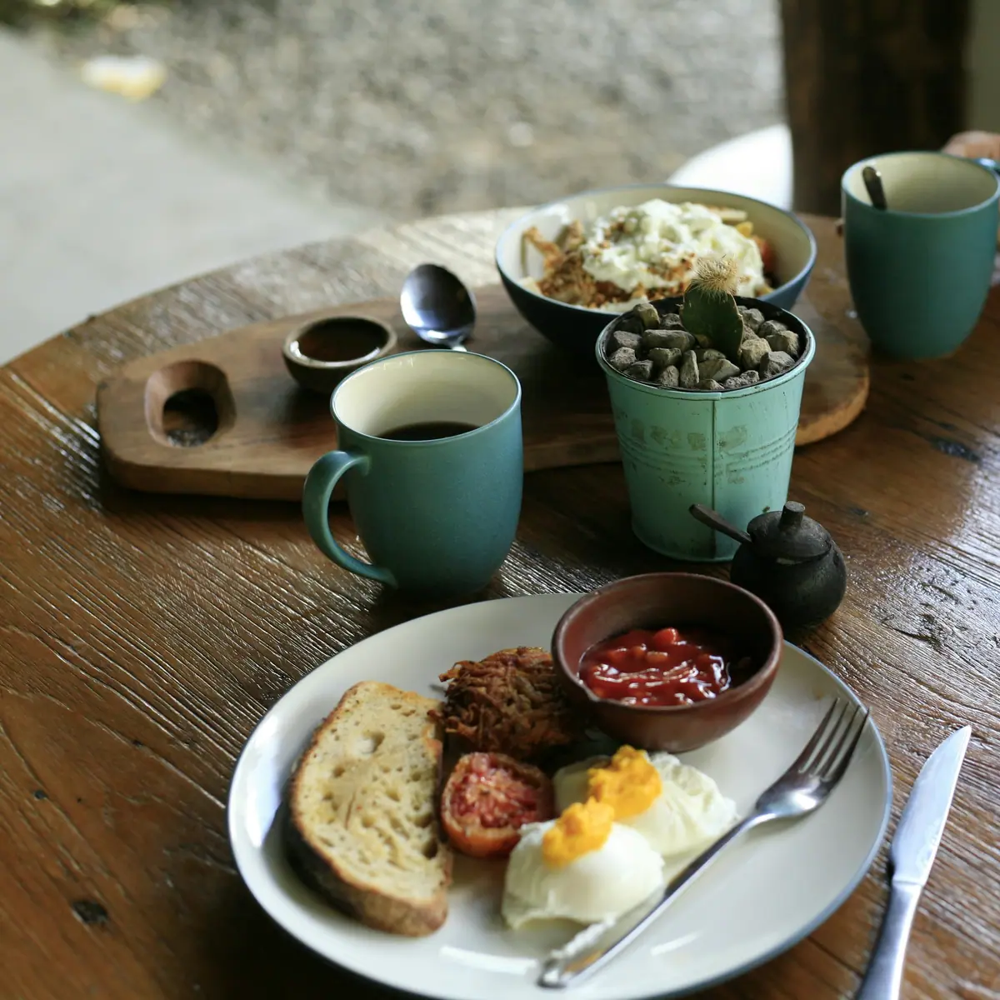
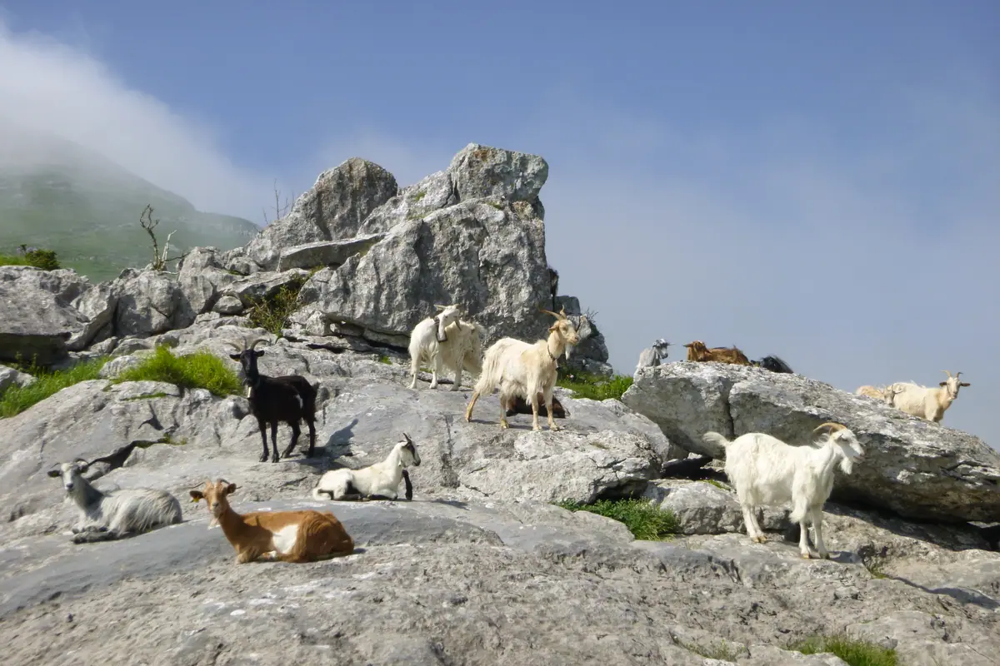
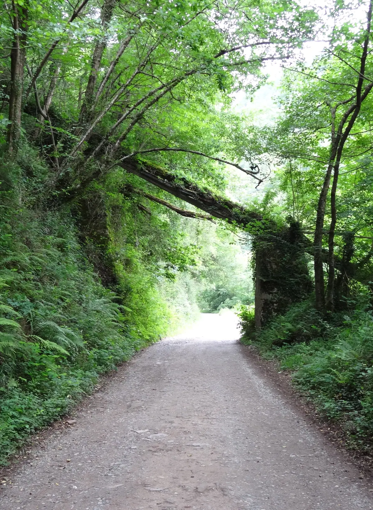
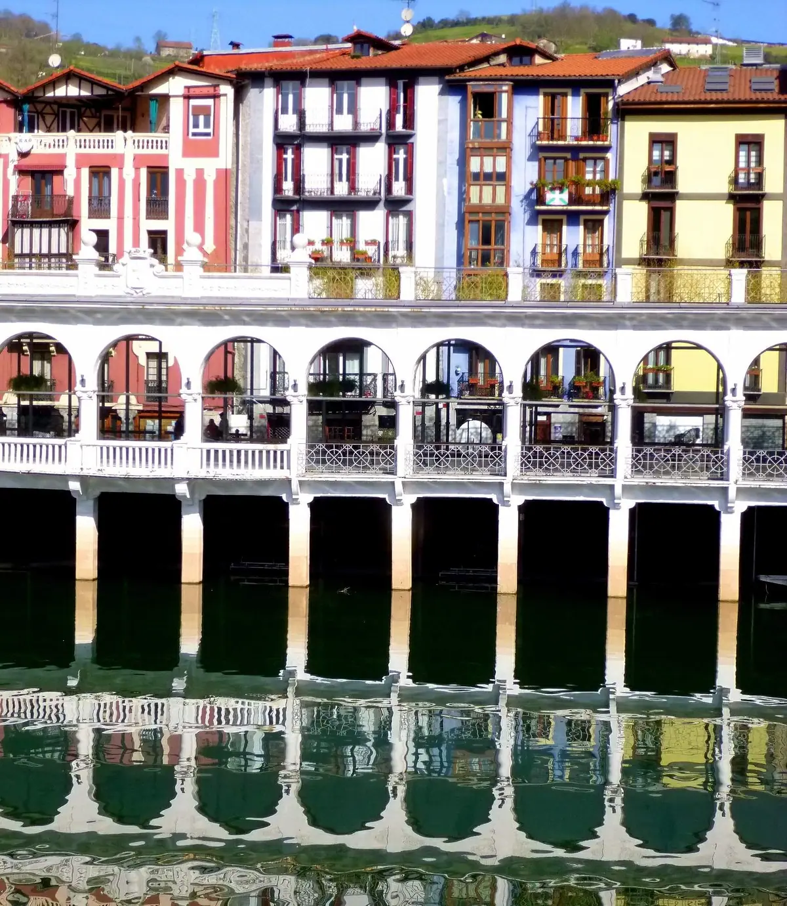
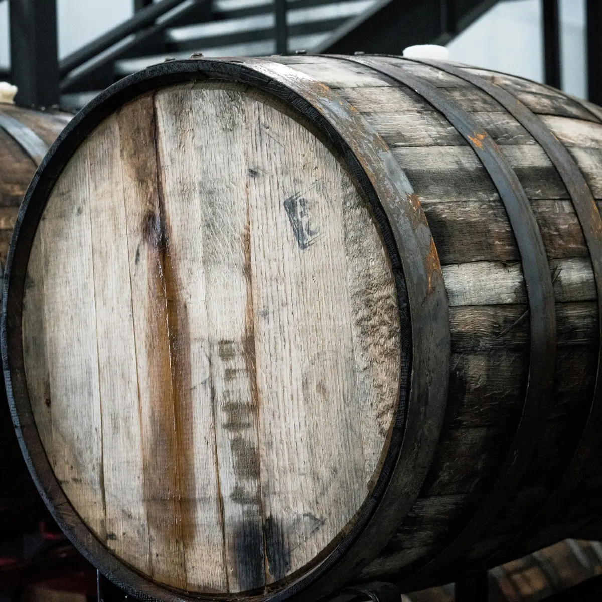

ZIDOR
Etxea ikusiAbaltzisketako landetxea, Txindokiren oinean
Etxe bat bidearen amaieran, Txindoki aurrean duela.
Behean herria dago. Tolosa kotxez dago pixka batera.

Arratsaldeko lauretatik aurrera iristen da eta hamabiak baino lehen ateratzen da. Txakurrarekin bazatoz, galde iezaguzue.




Etxea
Hiru logela bikoitz, partekatzeko sukalde handi bat eta zelaia aurrean. Gelaka edo osorik alokatzen da.
Data libreakZuzeneko erreserba
komisiorik gabe
Etorrera, gauak eta pertsonak aukeratzen dituzu. Gutxi gorabeherako prezioa ikusten duzu, eta mezua WhatsApp bidez bidaltzeko idazten da.
ErreserbatuBa al dago lekurik data horietan?
Aukeratu egutegian zein egunetan iritsiko zareten.
Idatz iezazkiguzu datak WhatsApp bidez.
- Gau librea
- Gau erreserbatua
- Zure gauak




Etxetik gertu
Txindoki
Igoera ezagunena Larraitzetik ateratzen da.
Plazaolako bide berdea
Oinez edo bizikletaz, tuneletan eta Leitzaran ibaiaren ondoan.
Sagardotegiak
Urtarriletik apirilera, txotx denboraldia.
Tolosako azoka
Larunbat goizetan.